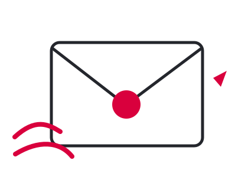

Электронная почта
Кратко опишите вопрос и укажите, как с вами связаться.
michalevic.office@gmail.com МихалевичАдвокатское бюро
МихалевичАдвокатское бюроНачать можно с короткого сообщения или звонка менеджеру: опишите ситуацию и задайте вопросы, которые вас волнуют.
Как мы общаемся
Менеджер выслушает вас и поможет понять, может ли бюро взяться за дело и какая помощь возможна. Если нужна консультация юриста, он договорится о разговоре с Алесем Михалевичем или с профильным специалистом — в зависимости от ваших вопросов.
Значительная часть работы бюро — подготовка правовых документов, поэтому юристы работают из разных городов и стран. Если удалённый формат вам не подходит, согласуйте с менеджером удобное время и место очной встречи с учётом того, где вы находитесь, прежде чем ехать в офис.

Кратко опишите вопрос и укажите, как с вами связаться.
michalevic.office@gmail.comПозвоните, чтобы обсудить консультацию. При согласовании звонка уточните часовой пояс.
+48 571 060 077По этому номеру можно также написать в WhatsApp, Telegram и Signal.
WhatsApp: +48 571 060 077Возможность очной консультации в других странах уточните у менеджера.
Посмотреть адрес на карте →Перед визитом
Да. Менеджер поможет согласовать удобное время и подтвердит место встречи до вашей поездки.
Возможность очной консультации в другой стране зависит от вашего местонахождения и графика юристов. Уточните варианты у менеджера; при необходимости можно начать с онлайн-консультации.
Для работы нужны электронные копии: сканы или фотографии. Менеджер предоставит подробный список документов для вашего дела. Если материалов много, он подскажет, какие отправить в первую очередь и как удобнее передать копии.